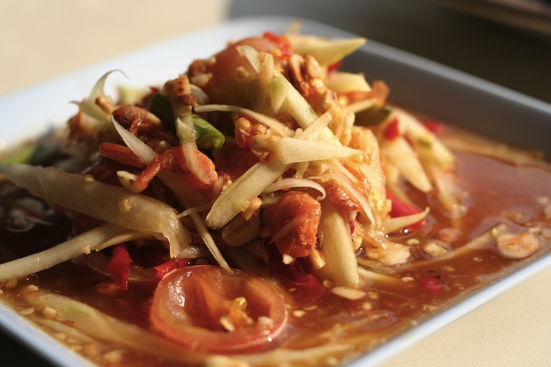

Сом там, салат из зеленой папайи

Сом там, салат из зеленой папайи - одно из самых известных блюд тайской кухни и одно из моих любимых. Попробуй - и ты узнаешь почему. Это блюдо можно встретить в любом ресторане и любой забегаловке в Таиланде, и уж точно самый лучший сом там ты найдешь в лотках на улице по цене в районе одного доллара или 30 бат.
Салат из зеленой папайи известен в Камбодже как бок лонг, а в Лаосе как там сом или там мак хунг. Он сочетает в себе четыре основных вкуса тайской кухни: кислый лимон, острый перец чили, соленый рыбный соус и сладкий пальмовый сахар. В Исане сом там едят с клейким рисом, а в остальном Таиланде как дополнение к основному блюду.
Существует много разновидностей салата сом там, каждая из которых обладает своим особым вкусом. Например, сом там таи (ส้มตำไทย) - это вариация с сушеными креветками, а сом там пу кхем (ส้มตำปูเค็ม) - с соленым речным крабом - мой любимый. Кроме того, в процессе приготовления, ты можешь пробовать что получается и просить сделать более кислым, сладким, или острым, как тебе больше нравится. Если ты еще не привык к тайской еде, советую начать с сом там таи, и попросить сделать не острым: маи пхет (ไม่เผ็ด).
Сом там таи - рецепт салата с креветками
Время приготовления - 10 минут
Ингредиенты
- 150 граммов зеленой папайи (стружка)
- 6 томатов черри, разрезанных пополам
- 1/4 стакана молотого арахиса (несладкого)
- 2 столовых ложки сушеных креветок
- пара тайских перчиков чили (серрано пойдет тоже, но не халапеньо)
- 1/3 чашки зеленой фасоли
- лимонный сок по вкусу
- тайский рыбный соус по вкусу
- один зубчик чеснока, очищенный
- пальмовый сахар по вкусу, обычный тоже подойдет
Приготовление
- Растолки чеснок и перец чили до образования однородной массы
- Добавь сушеные креветки и толки пока они не раскрошатся, но еще не образуют однородную массу
- Добавь пальмовый сахар, 2-3 чайные ложки для начала, потом всегда можно добавить больше. Добавить его стоит сейчас для того, чтобы он лучше растворился и смешался с другими ингредиентами
- Добавь арахис и растолки, но не до образования густой пасты
- Добавь зеленую фасоль и раздави
- Добавь папайю и помидоры и слегка раздави, чтобы помидоры пустили сок, а папайя стала мягче и больше впитала
- Добавь пару чайных ложек рыбного соуса и пару чайных ложек лимонного сока
- Перемешай, слегка подавливая, пока содержимое ступки не будет похоже на сом там
- Попробуй что получилось, добавь сахара, соуса, лимонного сока по вкусу
